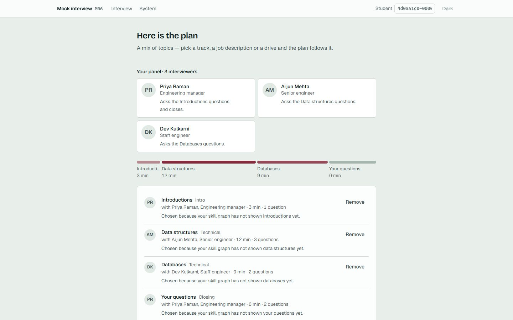
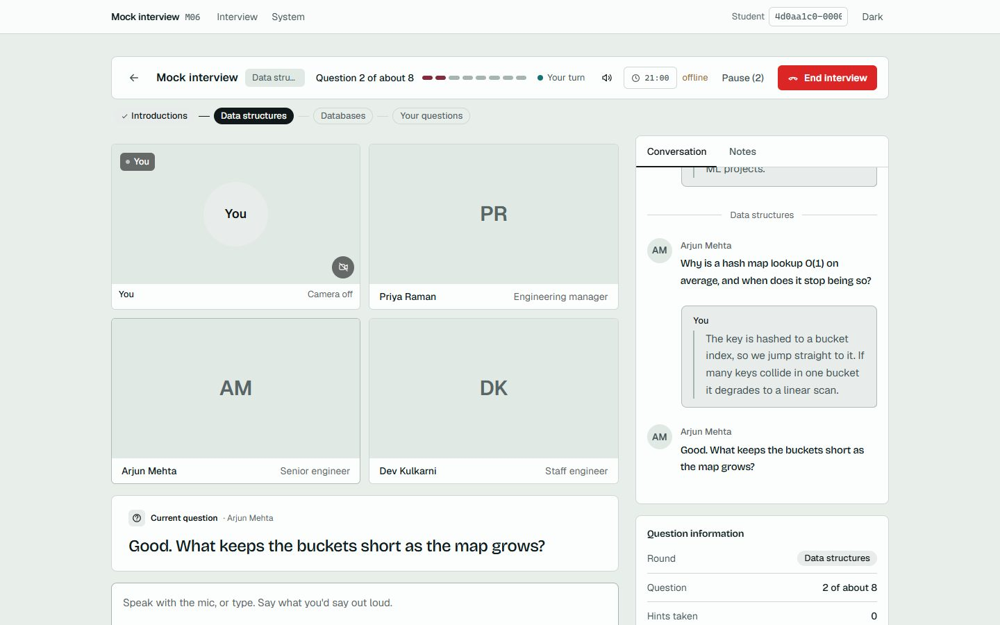
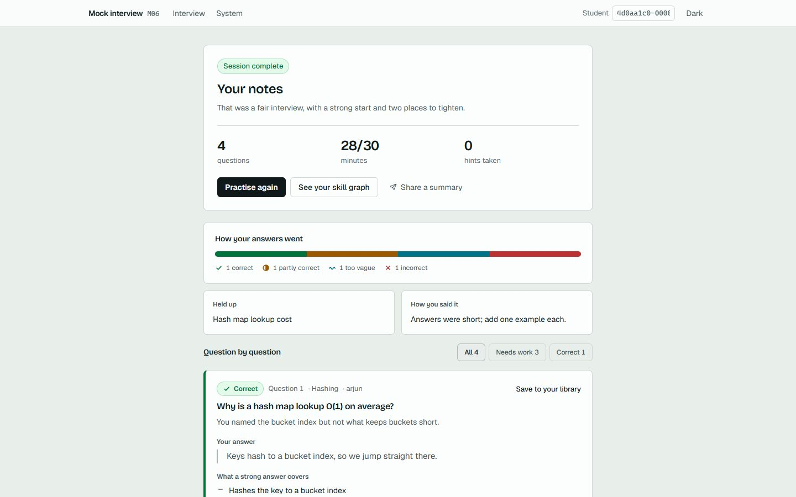
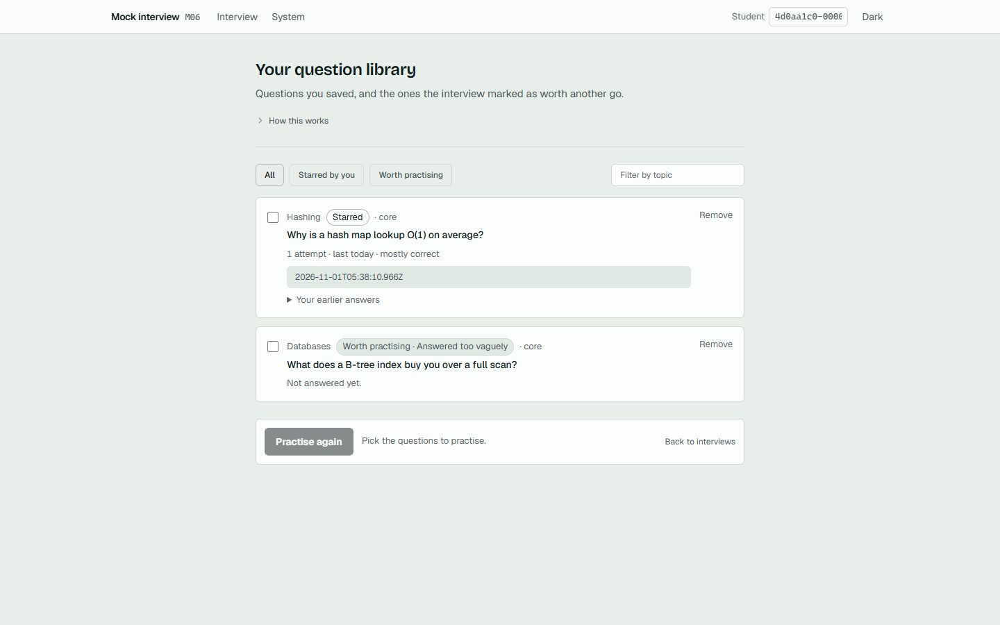

Correct
Why is a hash map lookup O(1)?
Keys hash to a bucket index, so the lookup goes straight there. Named the load factor when pushed.

A practice interview that follows up on what you actually said.
A mock seats a panel. Each part of the plan has its own interviewer, and you see their names before you start. There are 39 in all.
The panel
Some of the people you may meet
Harder never means ruder.
Pick what you would say. See what the panel asks next, and the note you would get.
A fixed example. In a real interview the follow-up is written for your own words.
Arjun, Bar Raiser, asksWhy is a hash map lookup O(1) on average?
Choose an answer above.
No score on screen while you talk. Afterwards every question gets a note: what you said, how it went, what a strong answer covers.
Why is a hash map lookup O(1)?
Keys hash to a bucket index, so the lookup goes straight there. Named the load factor when pushed.
What keeps the buckets short?
Said resizing. Missed that resizing is triggered by the load factor, and why that keeps the average cost flat.
What does an index buy you?
Said it is faster. Named no mechanism: what is stored, and what a scan would do instead.
Is a view stored on disk?
Said always. A view stores a query, not rows, unless it is materialised. Challenged in your own words.
Name one use of a trie.
Moved on after a pause. Counted as not answered, and listed first under work to do.
Your project line: "cut latency by half".
Claimed a number without saying how it was measured. Not scored; kept in the notes.
Setup is three choices and a look at the plan. The interview takes as long as you picked. The notes are waiting when you finish.
You hold: notes on every questionabout 31 min
A gentle interviewer, hints on, and a retry if you want another go. Each answer is checked once rather than three times: less precise, never more generous.

A realistic panel: a lead who opens and closes, someone who knows each part, HR for the people questions. The clock is enforced and a hint costs credit.

As Mock, with a brisker technical interviewer. Start from a job description or a company's drive and the plan follows what it asks for.

No hints, a hard clock with no overrun, and an interviewer who keeps going until your reasoning runs out. Harder, never ruder.

No. Nothing on the screen is a live score. The notes come at the end, and say how each answer went.
Yes. You get one pause for every fifteen planned minutes, up to five minutes each, and the clock stops while you are away.
No. Type your answers, or speak them and read and edit the text before anything is sent.
Both are optional. A job description shapes the plan. A resume adds a short part on lines an interviewer would push on, and that part is not scored.
Flag it during the interview. It goes back to the owners of the question bank.

Every interview is different, because the questions follow what you say.
Pick a topic, a length and a kind. Your plan is ready in seconds.
Start an interview